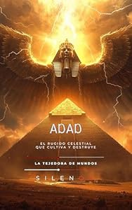

Biblioteca › Mesopotamia › ADAD: El Rugido Celestial que Cultiva y Destruye (MESOPOTAMIA nº 28)MesopotamiaADAD: El Rugido Celestial que Cultiva y Destruye (MESOPOTAMIA nº 28)♡ Añadir a favoritosLa Tejedora de Mundos (Silenos)SinopsisADAD: El Rugido Celestial que Cultiva y Destruye (MESOPOTAMIA nº 28)Enlaces de adquisiciónAMAZONPaísesIrakSiriaTurquíaIránRegionesMesopotamiaCreciente FértilBabiloniaAsiriaCanaánMonte ZaphonPersonajesAdadHadadBaalEnlilAnuMardukPalabras claveTormentaFertilidadRayosDiluvioAgriculturaTeocraciaMitología semíticaDivinidad atmosférica← URAS: La Madre Primordial de la Tierra Fértil y Profunda (MESOPOTAMIA nº 27)NAMMU: La Matriz Cósmica Sumeria y el Origen de Todo (MESOPOTAMIA nº 29) →